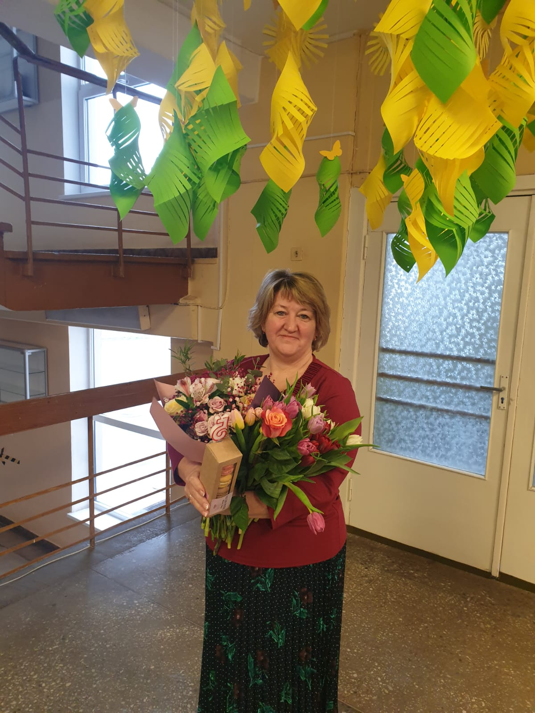

"Man patīk, ka šis darbs nav vienmuļš un katra diena ir citādāka."
Siguldas pilsētas vidusskolā strādā kopš skolas dibināšanas sākuma — jau 15 gadus. Kopējā darba pieredze šajā jomā ir 23 gadi.
Intervētājs Raivis Maksimovs
Kāpēc jūs izlēmāt kļūt par skolas durvju dežuranti?
Es nemeklēju tieši šo darbu. Es redzēju, ka tiek meklēti darbinieki, un pieteicos. Mani pieņēma darbā, un vēlāk sapratu, ka šis darbs man ir piemērots.
Kā izskatās parasta diena skolā?
Dienas gaita nav grūta vai sarežģīta, taču jāuzņemas liela atbildība.
Kādi parasti ir grūtākie pienākumi, kas rada lielāku stresu vai atbildību?
Man nekas nesagādā stresu, jo man patīk mans darbs. Mani pienākumi ir sagaidīt skolotājus un skolēnus, izsniegt klašu atslēgas, zvanīt zvanus uz stundām un sniegt nepieciešamo informāciju.
Kā jūs nodrošināt, lai skolā ienāktu tikai bērni vai cilvēki, kuriem ir atļauts atrasties skolā?
Es esmu ļoti vērīga. Pazīstu skolas skolotājus un daudzus skolēnus.
Kā jūs rīkojaties, ja ierodas kāds nepazīstams cilvēks? Vai jūs viņu dzenat ārā vai zvanāt policijai?
Es pajautāju, ko viņš meklē, un tad dodu tālākās norādes, kur doties un ar ko runāt. Ja cilvēkam nav iemesla atrasties skolā, es protu sarunāt, lai viņš dodas prom.
Kāda ir sadarbība ar skolēniem un skolotājiem ikdienā?
Ar skolēniem nekad nav garlaicīgi, tāpēc dažreiz jāatgādina par iekšējās kārtības noteikumiem. Ar skolotājiem ir svarīgi būt vienā komandā.
Vai ir kāds spilgts notikums ar skolēniem, kas palicis atmiņā?
Visu laiku kaut kas notiek, taču nekas īpaši spilgts atmiņā nav palicis, jo skolēni pārsvarā ir mierīgi.
Kas jums šajā darbā patīk visvairāk?
Man patīk, ka šis darbs nav vienmuļš un katra diena ir citādāka. Mainās cilvēki, un ierodas dažādi viesi.
Cik ilgi jūs strādājat šajā skolā?
Tieši Siguldas pilsētas vidusskolā strādāju jau no paša sākuma — tie ir 15 gadi. Pirms tam strādāju 2. pamatskolā, un kopumā šajā jomā esmu nostrādājusi 23 gadus.
SĀKUMS